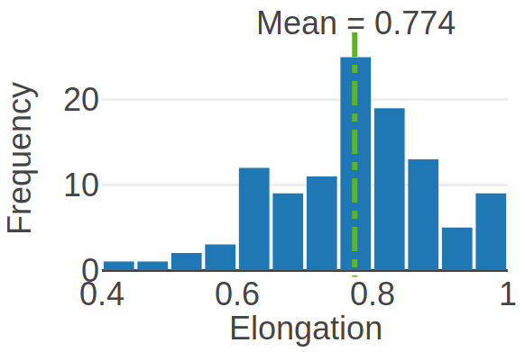

Autonomous Construction using Found Stones
[ Watch Movie ]
We developed a specialized construction algorithm and robotic system that can autonomously build motion support structures with previously unseen objects.
Raw Material
The stone data set used in our experiments contains samples of decorative creek and pebble stones.

The characteristics of the stone dataset exhibits the extent of our system in the general sense of construction with stones. For example, one can compare our dataset with that of stones found on Mars.
Deposition Planner
The deposition planner utilizes simulations to incorporate the uncertainties in the world description and in the robot dynamics. A physics-based simulator is used for finding an initial set of physically stable poses which is refined through an action space reduction method.
An
approximate close stone mesh
is generated using the noisy and incomplete data from the scanning sensor.
Robot Design
The robot is a low-cost mobile manipulator made from off-the-shelf components, capable of maneuvering over irregular terrain.
The fingers are
curved
while being
flat and thin
near the pick-up points to scoop the object.

Five parallel sub-fingers
are connected to the main rigid finger body through a flexure.

The
flexure joint
enhances compliance and increase friction after the initial grasping.

Stone Crabber
is a 1 DOF Pinch gripper designed to pick up stones.

A downward-facing VGA
gripper camera
is fixed on the end-effector of the arm.

The object pose with the
best "score"
is chosen as the deposition pose.
Experiments
We demonstrate the approach by running the system on a variety of terrains and with mixed materials, including both deformable and rigid components.